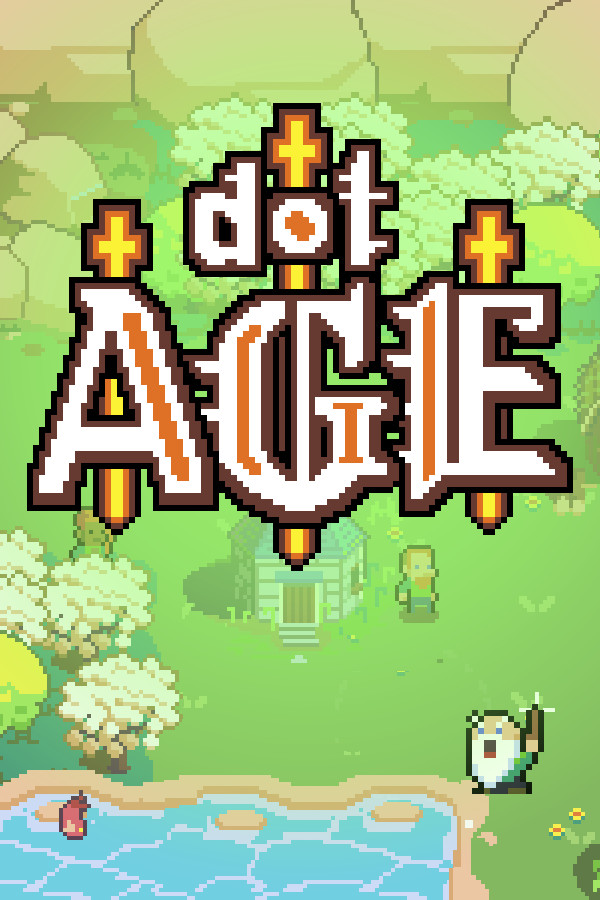

AGE
AGE
Details
|  | |
| Playtime | Not Played |
| Last Activity | Never |
| Added | 17/04/2020 |
| Modified | Never |
| Completion Status | Not Played |
| Source | Steam |
| Platform | PC |
| Release Date | 08/05/2018 |
| Community Score | 70 |
| Critic Score | |
| User Score | |
| Genre | Software Training Utilities |
| Developer | Sylvain Seccia |
| Publisher | Petite Fleur Productions |
| Feature | Single Player |
| Links | PCGamingWiki Community Hub Discussions Guides Store Page News |
Description
AGE is a free software for creating 2D adventure games without the need for technical programming skills.
A few notions of scripting are enough to master all the features. The tools offered are very easy to use and are intended primarily for non-programmers, and more specifically for screenwriters, artists and game designers who want to create their own adventure games.
Maybe your visual universe is in place but you don't know how to turn it into a video game?
Maybe programming is a big obstacle to making your Point & Click or Visual Novel project a reality?
Perhaps you have already tested software like Unity or Unreal without much success?
Maybe you even tried to partner with a developer to complete your project?
AGE will allow you to make your future video games by being primarily concerned with the artistic creation of your project.
AGE offers a new interface approach based on an original concept of pages and little used in application development software.
The interface has two parts: the common part and the part reserved for pages. In the first part, you can access the main menu at the top left, the toolbar at the top right and page navigation at the bottom of the window. These areas are fixed and ubiquitous, and share functionality with multiple editors. The second part is on the contrary dynamic and it is reserved for the project, the scenario, the generation of the executables, the teaching resources and of course the editors such as the scene editor that you will use most often.
Editors are dedicated to the production of assets, that is to say to the creation and editing of objects (including characters), scenes, dialogues, players (including inventories), cutscenes and visual effects.
The scenario editor is at the heart of the environment, making it possible to define the narrative flow of the game. It is therefore not necessary to program a state machine to control the puzzles since AGE already offers a ready-to-use tool. All you have to do is add nodal boxes to the scenario and connect them to each other. In runtime, an interpreter is responsible for updating the states when the game creator decides to validate a riddle following a player's action. In other words, the creator only needs to notify the validation of a box when the player solves the puzzle in question. Scripts integrate with node boxes and editor events.
The object editor allows you to create objects in the broad sense of the term and configure them to then control them in scenes. The generic term object is therefore used to mention both active and static objects in the scene, inventory items and game characters.
The first column of the interface lists the three default animations STOP, WALK and TALK (even if they are empty), and just below: the name of your animations. Each animation has its own parameters.
The second column exposes by category the properties of the object, animations and sub-objects.
The third column is reserved for viewing the selected frame.
The frames of the selected animation are displayed at the bottom of the editor.
The scene editor allows you to compose the levels of the game by placing the objects and adding the necessary interactions. Most of your time will be spent on this editor.
One of the strengths of AGE lies in its simplicity of defining the character's walking area and associating an action with a behavior. In the majority of cases when the player decides to retrieve an object present in the scenery by clicking on it, the character must first move towards this object and possibly play the appropriate animation to pick up the object. This sequence of steps is achievable without writing a single line of code using grids and cells.
You can also create in-game cutscenes using timelines by placing shots in your scene.
Timelines have two main uses: to create in-game cutscenes and transitions by taking advantage of shots. One of the very practical advantages is being able to attach music and add subtitles while respecting the synchronization of all the elements present on the timeline, including the execution of scripts.
The dialog editor allows you to write and structure your interactive conversations. For a narrative adventure game, you will often have to work in parallel on the scene editor and the dialogue editor to trigger state changes. You can skip this editor if your gameplay is essentially based on object puzzles without narration, as it was the case with my game Vive le Roi.
Quick access to the current language makes it possible to translate or verify sentences in the blink of an eye without exporting CSV files.
AGE has two modes to allow you to edit your scripts according to your level and your habits: the expert mode using a classic code editor and the much more intuitive Visual Scripting mode designed especially for AGE.
Switching from one mode to another is possible at any time.
The adventure began with Désiré, the first Point & Click game I created with AGE first version which at that time was simply an internal tool I used for my own. To date, Désiré has reached two million downloads and won many awards in the world.
Then the tool has continued to evolve over the years after the release of Désiré to become a software in its own right in order to give you the possibility of creating, in turn, your own adventure game with ease.
A few notions of scripting are enough to master all the features. The tools offered are very easy to use and are intended primarily for non-programmers, and more specifically for screenwriters, artists and game designers who want to create their own adventure games.
Why use AGE?
Maybe your visual universe is in place but you don't know how to turn it into a video game?
Maybe programming is a big obstacle to making your Point & Click or Visual Novel project a reality?
Perhaps you have already tested software like Unity or Unreal without much success?
Maybe you even tried to partner with a developer to complete your project?
AGE will allow you to make your future video games by being primarily concerned with the artistic creation of your project.
A Singular Interface
AGE offers a new interface approach based on an original concept of pages and little used in application development software.
The interface has two parts: the common part and the part reserved for pages. In the first part, you can access the main menu at the top left, the toolbar at the top right and page navigation at the bottom of the window. These areas are fixed and ubiquitous, and share functionality with multiple editors. The second part is on the contrary dynamic and it is reserved for the project, the scenario, the generation of the executables, the teaching resources and of course the editors such as the scene editor that you will use most often.
Editors are dedicated to the production of assets, that is to say to the creation and editing of objects (including characters), scenes, dialogues, players (including inventories), cutscenes and visual effects.
Transcribe your Scenario
The scenario editor is at the heart of the environment, making it possible to define the narrative flow of the game. It is therefore not necessary to program a state machine to control the puzzles since AGE already offers a ready-to-use tool. All you have to do is add nodal boxes to the scenario and connect them to each other. In runtime, an interpreter is responsible for updating the states when the game creator decides to validate a riddle following a player's action. In other words, the creator only needs to notify the validation of a box when the player solves the puzzle in question. Scripts integrate with node boxes and editor events.
Create your Objects and Characters
The object editor allows you to create objects in the broad sense of the term and configure them to then control them in scenes. The generic term object is therefore used to mention both active and static objects in the scene, inventory items and game characters.
The first column of the interface lists the three default animations STOP, WALK and TALK (even if they are empty), and just below: the name of your animations. Each animation has its own parameters.
The second column exposes by category the properties of the object, animations and sub-objects.
The third column is reserved for viewing the selected frame.
The frames of the selected animation are displayed at the bottom of the editor.
Stage your Story
The scene editor allows you to compose the levels of the game by placing the objects and adding the necessary interactions. Most of your time will be spent on this editor.
One of the strengths of AGE lies in its simplicity of defining the character's walking area and associating an action with a behavior. In the majority of cases when the player decides to retrieve an object present in the scenery by clicking on it, the character must first move towards this object and possibly play the appropriate animation to pick up the object. This sequence of steps is achievable without writing a single line of code using grids and cells.
You can also create in-game cutscenes using timelines by placing shots in your scene.
Timelines have two main uses: to create in-game cutscenes and transitions by taking advantage of shots. One of the very practical advantages is being able to attach music and add subtitles while respecting the synchronization of all the elements present on the timeline, including the execution of scripts.
Write and Translate your Dialogs
The dialog editor allows you to write and structure your interactive conversations. For a narrative adventure game, you will often have to work in parallel on the scene editor and the dialogue editor to trigger state changes. You can skip this editor if your gameplay is essentially based on object puzzles without narration, as it was the case with my game Vive le Roi.
Quick access to the current language makes it possible to translate or verify sentences in the blink of an eye without exporting CSV files.
An intuitive Visual Scripting
AGE has two modes to allow you to edit your scripts according to your level and your habits: the expert mode using a classic code editor and the much more intuitive Visual Scripting mode designed especially for AGE.
Switching from one mode to another is possible at any time.
Désiré
The adventure began with Désiré, the first Point & Click game I created with AGE first version which at that time was simply an internal tool I used for my own. To date, Désiré has reached two million downloads and won many awards in the world.
Then the tool has continued to evolve over the years after the release of Désiré to become a software in its own right in order to give you the possibility of creating, in turn, your own adventure game with ease.